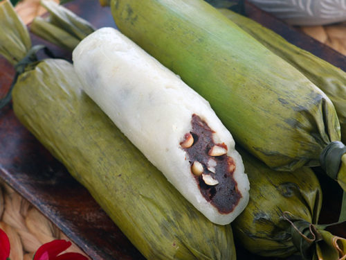

A beloved delicacy from Eastern Visayas, Moron (food) is a sweet, chocolate-infused rice treat that is both simple and satisfying. Wrapped in banana leaves and known for its soft, sticky texture, this traditional snack is a staple in Leyte and a favorite among locals and visitors alike.

Moron is made from glutinous rice, coconut milk, sugar, and cocoa or chocolate, giving it its signature rich flavor. The mixture is carefully prepared and wrapped in banana leaves before being steamed, resulting in a soft and chewy texture with a subtle earthy aroma from the leaves. Its distinct taste and preparation method make it a unique addition to the region’s culinary heritage.
Commonly sold in local markets and roadside stalls, Moron is enjoyed as a snack, dessert, or even a quick energy boost during travel. It is often paired with hot drinks like coffee or native chocolate, making it a comforting treat at any time of the day. Beyond its flavor, Moron reflects the simplicity and creativity of Leyte’s local cuisine, turning basic ingredients into something deeply satisfying.

Moron is made from glutinous rice, coconut milk, sugar, and chocolate.
It is wrapped in banana leaves, which add aroma during steaming.
Moron is commonly enjoyed with coffee or hot chocolate.